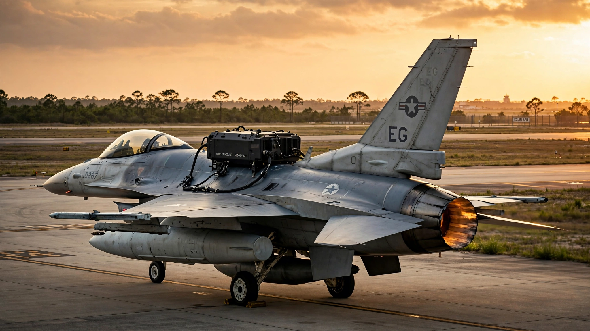

🛡️ Defense
The Air Force Just Flew an AI-Controlled F-16 With a Bolt-On Kit. At $5M per Jet, the Retrofit Math Beats Building New Drones by 5:1.
DARPA's VENOM program modified a standard F-16 with an aftermarket autonomy package that lets the pilot toggle between human and AI control with a switch. We ran the fleet economics: converting the USAF's 936 existing F-16s costs $4.7 billion. Building the same number of purpose-built CCA drones: $23.4 billion. Allied air forces operate 3,600 more F-16s that could take the same kit.

Six jets. That is the entire fleet the Air Force and DARPA needed to reach one of the most consequential milestones in military aviation since stealth: in July 2026, a modified F-16 Fighting Falcon flew under the control of an artificial intelligence agent at Eglin Air Force Base in Florida, marking the first time an operational-variant fighter has performed autonomous flight using an aftermarket bolt-on kit rather than a clean-sheet design, while the pilot sat in the cockpit toggling between human and AI control with the literal flip of a switch.
The program is called VENOM, Viper Experimentation and Next-generation Operations Model, and its premise is straightforward enough to fit on a PowerPoint slide while being radical enough to restructure how the Pentagon thinks about autonomous combat air power: instead of spending $25 million per unit to build purpose-built autonomous drones from scratch, you take an existing F-16, already paid for and already maintained, and bolt on a kit that gives it an AI brain for a fraction of the cost.
"The air force and DARPA team has automated flight controls and sensors on a standard F-16 without changing the jet's core software," said Brigadier General James Valpiani, a program manager in DARPA's Tactical Technology Office, and that sentence deserves a second reading because the jet's core flight software stays untouched. The autonomy kit interfaces with existing flight controls and mission systems through an add-on layer that includes auto-throttle, additional computing hardware, sensors, and specialized AI-hosting software, making it functionally an aftermarket upgrade of the kind the F-16 has absorbed dozens of times over its 52-year production run.
The Retrofit Economics Nobody Is Talking About
The Air Force currently operates 936 F-16C/D fighters across active duty, Air National Guard, and Reserve units. Each aircraft has a replacement cost of roughly $30 million in 2026 dollars, but the marginal cost of the airframe is zero because it already exists and is already being maintained at approximately $27,000 per flight hour.
DARPA has not published the cost of the VENOM autonomy kit, but comparable F-16 retrofit programs provide useful bounds: the AN/APG-83 Scalable Agile Beam Radar, which replaces the jet's entire nose-mounted radar with an active electronically scanned array, costs approximately $3 million per installation; the Sniper Advanced Targeting Pod runs $4 to $5 million; electronic warfare suite upgrades range from $2 million to $6 million depending on scope. The VENOM kit, which adds computing hardware, sensors, auto-throttle, flight instrumentation, and software without altering core avionics, sits plausibly in the $5 to $8 million range per aircraft.
At $5 million per kit, retrofitting the entire USAF F-16 fleet costs $4.68 billion. Compare that to the alternative: the Collaborative Combat Aircraft program targets a per-unit cost of $25 million, and the Air Force unveiled its first two CCA prototypes in March 2026 (General Atomics' YFQ-42A and Anduril Industries' YFQ-44A). Building 936 CCAs to match the F-16 fleet costs $23.4 billion. Five times the retrofit price.
| Approach | Unit Cost | Fleet of 936 | Timeline |
|---|---|---|---|
| VENOM retrofit (existing F-16) | ~$5M | $4.7B | 3–5 years |
| CCA (new-build drone) | ~$25M | $23.4B | 8–12 years |
| F-35A (new-build manned) | ~$80M | $74.9B | 15+ years |
These numbers are not perfectly apples-to-apples, and the distinction matters. A CCA is designed to be attritable, meaning the Air Force can accept losing it in combat without losing a pilot or a $30 million airframe, whereas a VENOM F-16 still carries a human pilot and an expensive jet, making the programs serve overlapping but distinct roles. But the comparison holds because the Pentagon's budget is finite and the threat timeline is accelerating: if you need autonomous combat capability deployed across 900+ aircraft in three to five years, retrofit wins on schedule alone, since CCA production lines do not yet exist at scale while VENOM kits could be installed on depot maintenance timelines using infrastructure that already handles F-16 upgrades at Ogden Air Logistics Complex and Korean Aerospace Industries facilities worldwide.
The Simulation Asymmetry
Before the VENOM F-16 ever left the ground under AI control, the program had already run what DARPA describes as "countless aircraft combat scenarios" in simulation since 2024. Major Trent McMullen, the 40th Flight Test Squadron's advanced capabilities division chief, described the process: "A specific scenario can be run 1,000 times and the variations and decisions made throughout that mission can be studied." One-on-one dogfights, two-on-one engagements, within-visual-range knife fights, beyond-visual-range missile exchanges, each run generating data that feeds the next iteration of the AI agent.
In human terms, a USAF fighter pilot accumulates roughly 200 to 300 tactical sorties per year, totaling 4,000 to 6,000 over a 20-year career, of which perhaps 200 to 400 involve actual basic fighter maneuver engagements against an adversary aircraft while the rest are training flights, ferry missions, exercises, and deployments. If the VENOM AI ran even 50 distinct scenarios at 1,000 iterations each before first flight, it entered the cockpit with more combat decision experience than any human pilot accumulates in a lifetime, and the asymmetry is staggering.
That is not the same as competence, because simulation fidelity, physics modeling, sensor emulation, and adversary AI quality all introduce gaps between simulated and real performance, and the history of AI in constrained environments from chess to Go to protein folding shows that simulation volume translates to real-world performance only when the sim-to-real gap is manageable. Air combat sits closer to the favorable end of that spectrum than autonomous driving. A VENOM F-16 operates within a well-defined flight envelope, follows known aerodynamic laws, and engages adversaries whose behavior is bounded by the same physics; that is a fundamentally more simulatable problem than navigating a construction zone in San Francisco, where the variables are infinite and the rules are suggestions.
The 3,600-Jet Export Question
The F-16 is not just America's fighter but the world's: over 4,600 units have been built since 1974 across plants in Fort Worth, the Netherlands, Belgium, Turkey, and South Korea, and as of 2026, approximately 3,600 of them operate in 25 allied and partner air forces ranging from NATO stalwarts like Turkey (245 jets), the Netherlands (52), and Belgium (44) to Indo-Pacific partners like South Korea (169), Taiwan (143), and Singapore (60) to Middle Eastern allies like Israel (175) and Egypt (220).
If the VENOM autonomy kit is exportable under Foreign Military Sales, the proliferation math is staggering: Turkey could convert 245 jets for roughly $1.2 billion, Israel could do 175 for $875 million, South Korea could add autonomous capability to 169 aircraft for $845 million, and the global F-16 fleet could become partially autonomous within a single defense procurement cycle of three to five years without building a single new airframe. No other autonomous combat aircraft program offers this timeline. None. The reason is simple: no other program starts with 4,500 jets already built, fielded, maintained, and supported by a global logistics network that has been operating continuously for half a century.
The CCA, by contrast, requires new production facilities, new supply chains, new maintenance infrastructure, and entirely new training pipelines, making it the better long-term solution for some mission sets (particularly high-risk strikes where attrition is expected) but a decade-scale program competing against a retrofit that can deploy on maintenance-depot timelines.
What This Doesn't Prove
The VENOM flight test is a milestone, not a deployment. Several fundamental questions remain unanswered and DARPA has been transparent about them. First, the AI agent flew portions of the mission, not the entire flight, and a qualified pilot sat ready to intervene. How much of the combat-relevant flight envelope the AI can handle independently is still being evaluated. Second, the "human-on-the-loop" architecture, where the pilot monitors and can override at any time, works in testing but introduces latency and cognitive load problems in actual combat, where decisions happen in fractions of a second. Third, Lt. Col. Joe Gagnon, the 85th Test and Evaluation Squadron commander, stated explicitly that "there will never be a time where the VENOM aircraft will solely fly by itself without a human component." That constraint limits the operational ceiling of the retrofit approach compared to fully autonomous unmanned systems.
Additionally, our $5 million per-kit estimate is interpolated from comparable retrofit programs, not from a published DARPA budget line. The actual cost could be higher if the computing hardware and sensor suite require more integration work than an AESA radar swap, or lower if software development costs are amortized across a larger fleet. We also do not know whether the VENOM kit is designed to be production-replicable at scale or whether it remains a research platform requiring bespoke integration for each airframe.
The Strongest Case Against
The best argument against the VENOM-as-fleet-strategy thesis is that it optimizes the wrong variable: the Air Force does not need more F-16s, autonomous or otherwise, but rather fewer manned platforms and more expendable unmanned mass. The CCA is designed to absorb the missions that risk pilot lives and expensive airframes, and making an F-16 autonomous does not make it expendable because its pilot, its maintenance tail, and its $30 million replacement cost all remain. An autonomous F-16 is a better F-16, but it is still a fourth-generation fighter in a world where adversary air defenses are designed to kill fourth-generation fighters.
Advocates of the clean-sheet approach argue that purpose-built CCA sensors, reduced radar cross-section, and lack of life-support systems give it mission capabilities that no F-16 retrofit can match. This is correct. The counterargument is temporal: no CCA exists at scale and none will for most of a decade, while the F-16s exist now and the VENOM kit could exist across the fleet in three to five years. In a strategic environment where the Taiwan scenario, the Baltic scenario, and the Gulf scenario could materialize before the CCA reaches initial operational capability, the retrofit fills a gap that the clean-sheet solution cannot.
What You Can Do
If you work in defense acquisition, the VENOM model suggests a broader question worth running the numbers on: what other platforms in the existing inventory could absorb aftermarket autonomy kits? The F-15E, with its two-seat configuration and advanced avionics, is an obvious candidate. The Navy's F/A-18E/F Super Hornet, with its fly-by-wire flight controls and planned service life extension, is another. The Army's AH-64 Apache has already demonstrated autonomous flight in testing. The cost comparison between retrofitting existing fleets and building clean-sheet autonomous platforms should be part of every program review until the numbers are settled.
If you are a defense investor, track the integration contractors. The companies that build the VENOM kit's computing hardware, sensor suite, and software stack are not necessarily the airframe primes. The AI agents themselves may come from DARPA's ACE and AIR programs, but the hardware integration, auto-throttle systems, and flight instrumentation represent a distinct supply chain that will scale if the program transitions from test to fleet conversion.
If you are a taxpayer, ask the simplest question: why are we spending $23 billion on new drones when we could spend $5 billion converting jets we already own? The answer involves legitimate capability gaps that only purpose-built unmanned systems can fill. But the question itself should be on the table in every congressional authorization hearing, backed by the kind of side-by-side cost data the Pentagon has been reluctant to publish.
The Bottom Line
The VENOM program's first autonomous F-16 flight is not, by itself, a revolution. It is an engineering demonstration that an existing combat aircraft can accept an AI agent through a modular kit without redesigning its core systems. What makes it consequential is the fleet math that follows. The United States operates 936 F-16s. Its allies operate 3,600 more. A $5 million autonomy kit applied across even half that fleet produces more autonomous combat sorties, faster, than the entire CCA program can deliver in its first decade of production. The question is not whether the retrofit or the clean-sheet approach is superior in the abstract. Both have their roles. The question is which one fields autonomous combat capability in the window where it matters, and the answer, for now, is the one that starts with 4,500 jets already built.